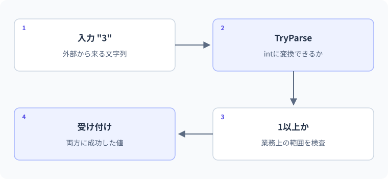

文字列と入力の変換
文字列を数量として受け付ける条件。
図解：文字列を数量として受け付ける条件

要点
- 文字列補間と書式を使う
- 失敗を想定して数値へ変換する
string message = $"合計: {total}";概念・構文
外から来るデータは、正しい値になる前はただの文字列です。「数字として読める」「許された範囲に入る」「画面にどう表示するか」を別の工程として扱います。C#の文字列の等値性と比較ルールもここで確認します。
文字列を組み立てる
C#では$"名前は{name}"と書くと、波括弧内の式が文字列へ埋め込まれます。stringは不変なので、TrimやReplaceなどの結果は新しい文字列です。元の変数を更新したい場合は戻り値を代入します。長さはLengthプロパティで取得し、length()メソッドではありません。
文字列の==は内容を比較する
両辺がstring型なら==は文字列の内容を比較します。一方、objectとして扱った場合やユーザー定義型では演算子の意味が異なることがあります。大文字小文字を無視する識別子比較などではStringComparison.OrdinalIgnoreCaseのように比較ルールを明示します。
入力失敗は通常の分岐で扱う
Console.ReadLine()など外部入力は、不正な形式やnullを含み得ます。int.TryParse(input, out int value)は成功したかをboolで返し、変換した値をout引数へ格納します。数字でない入力や範囲外を分岐で処理できるため、入力ミスのたびに例外を使う必要はありません。変換成功後も、年齢なら0以上など業務上の条件を別に確認します。
文字列を数値として読む前の三段階
Console.ReadLine()は入力が終わるとnullを返す可能性があり、値が必ずあるとは限りません。文字列があっても"abc"は整数として解釈できません。整数として読めても、年齢として-5や人数として0が許されるかは別問題です。nullや空欄の判定、形式の解析、業務上の範囲確認を分けると、ユーザーへ理由を返しやすくなります。
TryParseは成功をboolで返し、out引数へ変換結果を設定します。失敗時の結果値だけを見て判断してはいけません。int.TryParse("abc", out int value)はfalseでvalueは0になりますが、"0"の変換は成功してvalueが0になります。同じ0でも成功・失敗は異なるので、戻り値と値をセットで扱います。
短絡評価は安全な処理順を作る
int.TryParse(input, out int value) && value >= 1という式では、左辺がfalseなら右辺を評価しません。この短絡評価を使うと、変換成功後にだけ範囲判定を行えます。条件を読みやすく分割し、「形式が不正」と「範囲が不正」のメッセージを分けてもよいでしょう。短く書くことより、失敗理由を設計に反映できることが重要です。
ユーザー入力の誤りが通常の操作として発生するなら、ParseしてFormatExceptionを繰り返し捕捉するより、TryParseの成功・失敗として表す方が意図が明確です。ただしこの方針は例外を一切使わないという意味ではありません。ファイル読込失敗や想定外の障害と、利用者が数字を打ち間違えるケースを分けます。
stringは参照型だが、通常の==は内容を比較する
C#のstring同士の==は文字列の内容を比較します。ただしobject型として比較した場合や演算子が定義された独自型では話が変わるため、「C#の==はすべて内容比較」と一般化しないでください。
大文字小文字を無視して識別子を比較するなら、string.Equals(a,b,StringComparison.OrdinalIgnoreCase)のように方針を明示します。ユーザー向けの自然言語の並べ替えと、内部コードやキーの比較は同じ要件ではありません。文字列を全部ToLowerしてから比較する方法は、新しい文字列を作り、カルチャーにも左右されるため、比較用APIがある場面ではそれを使います。
不変性・エスケープ・文字数の注意
stringは変更不能です。TrimやReplaceは元の文字列の内容をその場で書き換えるのではなく、結果の文字列を返します。raw.Trim();だけではrawの参照は置き換わりません。raw = raw.Trim();または別の変数へ受け取る必要があります。大量に連結する場面ではStringBuilderを検討しますが、数回の補間に一律で使う必要はありません。
通常の文字列では改行を\n、バックスラッシュを\\のように表現します。パスでは@"C:\work"のような逐語的文字列も使えます。さらにstring.Lengthが数えるのはUTF-16のコード単位です。絵文字などは見た目の一文字がLength=1とは限らないため、入力制限で「文字数」を使う場合は何を数える仕様かを明確にします。
C#仕様の整理
| 観点 | C#での扱い | 読み方・設計上の要点 |
|---|---|---|
| 文字列の比較 | string同士の==は内容比較 | object型へ広げた式まで同じとは限らない |
| 数値解析 | TryParseのboolとoutで通常の失敗を扱える | 成功判定を捨てて結果値だけ使わない |
| 文字列の変更 | stringも不変 | Trimの戻り値を受け取る |
| 補間 | $"名前: {name}" | 補間は値の埋め込み。数値解析とは別工程 |
文法・実例・処理順
string raw = " 24 ";
if (int.TryParse(raw.Trim(), out int hours) && hours >= 0)
{
Console.WriteLine($"今月は{hours}時間学習");
}
else
{
Console.WriteLine("0以上の整数を入力してください");
}
Console.WriteLine("C#" == new string(new[] { 'C', '#' }));想定出力
処理順
- Trimで前後の空白を除いた文字列を取得する。
- TryParseが成功してhoursが24になり、0以上も満たす。
- 別に生成した文字列でも、string同士の内容が一致すればTrueになる。
値・状態の変化を追う
形式エラーと範囲エラーを分離する
string[] inputs = { " 12 ", "abc", "0", "101" };
foreach (string input in inputs)
{
if (!int.TryParse(input, out int value))
{
Console.WriteLine($"[{input}]: 整数ではありません");
continue;
}
if (value < 1 || value > 100)
{
Console.WriteLine($"[{input}]: 1〜100の範囲外");
continue;
}
Console.WriteLine($"[{input}]: 受付({value})");
}出力
| 段階 | 値・状態 | 読み解き |
|---|---|---|
| " 12 " | 解析成功、value=12 | 標準の整数解析は前後の空白を受け付ける |
| "abc" | 解析失敗、範囲判定へ進まない | continueでこの要素の残りの処理を終える |
| "0" | 解析成功、範囲判定で失敗 | 0は整数としては正しい |
| "101" | 解析成功、上限を超える | 形式と業務条件の二段階で検証する |
よくある間違いと修正
Trimを呼んだのに空白が残る
修正箇所: 入力の整形と代入
修正前
string raw = " C# ";
raw.Trim();
Console.WriteLine($"[{raw}]");修正後
string raw = " C# ";
string cleaned = raw.Trim();
Console.WriteLine($"[{cleaned}]");修正後の確認
- 出力が[C#]になる
- raw自体の内容は変わっていない
- 空白だけの入力なら[]になる
実例：購入数量の入力検証
フォームで受け取った数量を想定します。変換失敗と範囲外で表示を分けます。
string[] inputs = { "3", "0", "abc" };
foreach (string input in inputs)
{
if (!int.TryParse(input, out int quantity))
Console.WriteLine($"{input}: 整数を入力してください");
else if (quantity < 1)
Console.WriteLine($"{input}: 1以上を入力してください");
else
Console.WriteLine($"{input}: {quantity}個を受け付けました");
}想定出力
3: 3個を受け付けました
0: 1以上を入力してください
abc: 整数を入力してください処理と値の変化
- "3"変換・範囲検査とも成功
- "0"変換できるが1未満なので受け付けない
- "abc"整数に変換できないので以降の範囲検査へ進まない
入力に"-2"と"2.5"を追加すると、範囲違反と変換失敗の違いを比較できます。
基礎・標準・応用演習
C#実行環境：.NET 10 SDK
基礎演習
入力文字列を"-5"として、1〜100の整数なら「受付」、それ以外は「範囲外または不正」と表示してください。"50"と"abc"でも確認しましょう。
開始コード
string input = "-5";
// 変換の成功と範囲を両方確認する。入力例・前提条件
入力は-5、50、abc。許す整数の範囲は1から100まで。
考え方のヒント
TryParseの成功と、1以上100以下という範囲を別に考える。
解答例と確認ポイント
string input = "-5";
if (int.TryParse(input, out int value) && value >= 1 && value <= 100)
Console.WriteLine("受付");
else
Console.WriteLine("範囲外または不正");| 解答で確認する条件 | 確認方法 |
|---|---|
| -5とabcは不正側、50は受付側へ進む。 | コードと想定結果を照合 |
| Parseの例外で入力判定していない。 | コードと想定結果を照合 |
処理と結果の読み解き
-5は整数へ変換できても範囲外。50は両方を満たす。abcは変換できない。型へ変換できることと、業務上受け付けることを区別する。
よくある別解と選び方
TryParse失敗のifで早く戻り、後のifで範囲を調べてもよい。この課題は同じ表示なので条件をまとめる形も選べる。
よくある間違いと確認箇所
変換に成功しただけで-5を受け付けない。0、1、100、101も追加すると範囲の等号を検査できる。
実務例：フォームやAPI入力でも、型の変換と値の妥当性の二段階が必要になる。
標準：入力結果を三分類する
"", "abc", "-1", "0", "20"を順に確認し、整数にできなければ「形式エラー」、負数なら「負数」、それ以外は値を表示してください。
- 入力配列をforeachで回す
- TryParseを先に評価する
- 0は正常な値として扱う
開始コード
// 標準：入力結果を三分類する
// 課題とテストケースを読んで、自分で実装してください。
入力例・前提条件
空文字、abc、-1、0、20を順に扱う。
考え方のヒント
形式の失敗を先に分け、成功した整数について負数かを調べる。
解答例と確認ポイント
string[] inputs = { "", "abc", "-1", "0", "20" };
foreach (string input in inputs)
{
if (!int.TryParse(input, out int value))
Console.WriteLine("形式エラー");
else if (value < 0)
Console.WriteLine("負数");
else
Console.WriteLine(value);
}想定出力
- 空文字とabcは数値へ変換できないので同じ形式エラーになる。
- -1は変換できているため、二段目の条件で負数になる。
- 失敗時のout値0と正常入力の0を混同していないことが検証のポイントである。
| 入力 / 条件 | 期待結果 |
|---|---|
| "0" | 0 |
| "-1" | 負数 |
| "2147483648" | intの範囲を越えるため形式エラー |
処理と結果の読み解き
空文字とabcは形式エラー、-1は負数、0と20はその値を表示する。0は変換失敗時のout値と同じでも、TryParseのboolで意味を区別できる。
よくある別解と選び方
変換処理をメソッドへ切り出すのはLesson 07以降の発展。今は各入力でどの分岐を通るか表にする。
よくある間違いと確認箇所
outの値が0だから失敗と判定すると、本物の入力0も拒否してしまう。成否は戻り値で判断する。
実務例：複数の入力エラーを適切な案内へ分け、利用者が直せる情報を返す。
応用：コマンドの表記揺れを受け付ける
" START "、"start"、"stop"を、前後空白を除いてOrdinalIgnoreCaseでstartと比較してください。最初の二つをTrue、最後をFalseにします。
- 整形はTrimの戻り値を使う
- string.Equalsの比較方法を明示する
- ToLowerによる変換は不要
開始コード
// 応用：コマンドの表記揺れを受け付ける
// 課題とテストケースを読んで、自分で実装してください。
入力例・前提条件
前後空白と大文字小文字の違いがある3つの文字列。
考え方のヒント
Trimの戻り値へ比較を行い、OrdinalIgnoreCaseを指定する。
解答例と確認ポイント
string[] commands = { " START ", "start", "stop" };
foreach (string raw in commands)
{
string command = raw.Trim();
bool accepted = string.Equals(command, "start", StringComparison.OrdinalIgnoreCase);
Console.WriteLine(accepted);
}想定出力
- コマンド識別子なので、自然言語向けではなく序数ベースの大文字小文字無視を使う。
- 空白の整形と大小文字を無視する比較は別の操作である。
- startsのような類似文字列は完全一致しない。部分一致にしないことも仕様である。
| 入力 / 条件 | 期待結果 |
|---|---|
| " START " | True |
| "starts" | False |
| 空文字 | False |
処理と結果の読み解き
最初の入力はTrimでSTARTとなり、大文字小文字を無視して一致。startも一致し、stopは文字自体が異なるので不一致。
よくある別解と選び方
正規化した文字列を別の変数へ保存してからEqualsしてもよい。途中状態を観察しやすい。
よくある間違いと確認箇所
Trimを呼ぶだけで戻り値を使わないと元の文字列変数は変わらない。文字列の不変性を確認する。
実務例：コマンド名など機械的な識別では、カルチャー依存を避ける比較方式を明示する。
確認問題
理解チェックと公式資料
- 入力なし・形式不正・範囲外を区別できる
- TryParseの戻り値を必ず判定できる
- stringの内容比較と参照比較を区別できる
- Trimの戻り値を受け取る理由を説明できる
公式一次情報
公式資料
確認日：2026年9月14日。本文の理解を補うための資料です。学習対象は.NET 10 / C# 14です。パッチ番号は固定しません。